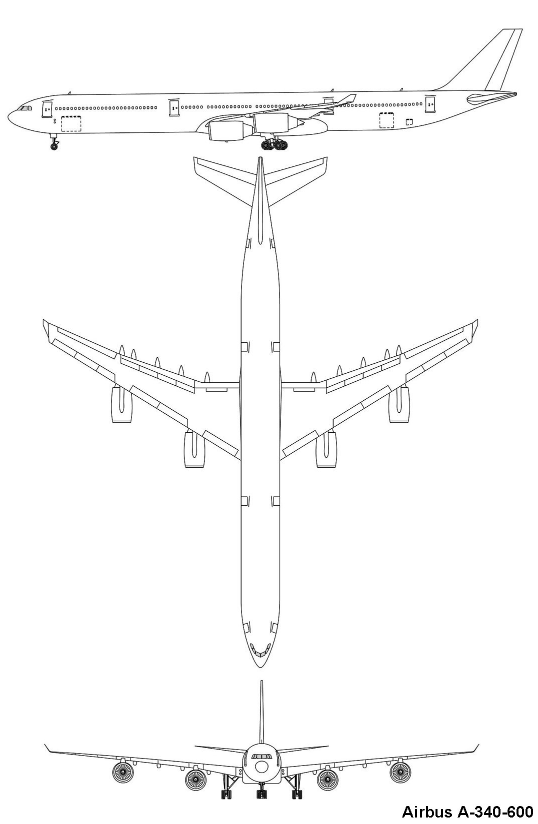
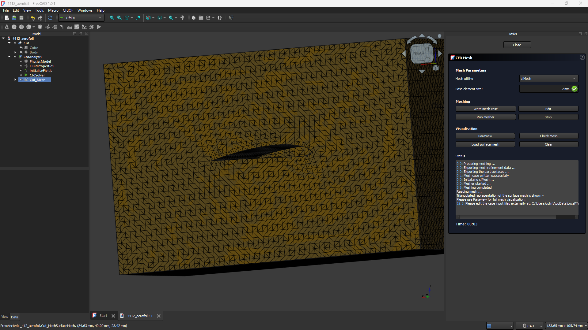
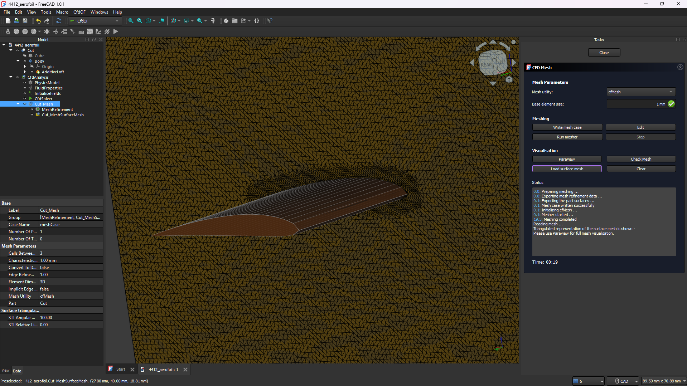

If you're considering employing me or found this page exploring, this should be a sort of blog exploring my interest in CFD and FEM. I'm also very excited to be beginning my usage of CAD software, using FreeCAD because open source rules:), but I will likely look at using SolidWorks very soon.
I'm certainly still in the process of developing my Eulerian and Lagrangian fluid simulator, however I think I want to retry them with OpenGL because I would like them to be 3D at some point and I think OpenGL is better for this.
This module was about the stress and strain of objects under applied loads, a lot of mathematics around 3D Hooke's Law and such. There was also a lot about meshing, what makes a good mesh, skewness and other properties. The first set of images was from the use of the skewness metric for mesh quality, clearly showing the difference between good and bad elements. This particular mesh had an average skewness of around 0.2 which I hear is not bad.
.png)
.png)
The results of the deformation and stress are intuitive too, greater deformation further along the crank, and a compression stress on one side of the crank and a tensile stress on the other of roughly the same magnitude.
For my general physics project i programmed a 3d heat conduction through a cylinder to model marshmallow roasting, I can't believe I didn't just use ANSYS to do this. I really hope the gif displays correctly but this is so cool. This is a 2D plane, where the bottom edge is at a constant 1 degrees celsius, the right edge has a Bi of 5 and the other edges are insulated. The mesh is 8*4=32 elements with quadratic nodes giving 121 nodes. The bottom and right edge are probed for heat flow and bottom is 1.67W and right is -1.67W so energy is conserved in aggregate.
Wrapped up module 1 completing the independent 2D conduction case study similar to the taught part.
Thanks to a free online course from Cornell on edX, I'm getting a thorough walkthrough of the mathematics involved in discretizing a mathematical model of a physics or engineering problem. Not only that, but as the course progresses the theory behind CFD and FEM are taught in great detail with case studies in ANSYS which i'm very keen to try as I believe it has GPU acceleration (FreeCAD is painfully slow). The final case study involves directly relating a CFD simulation into FEM analysis which was my original goal of simulating a hydroturbine rotor to theorise the power output for a given flow. This is all very exciting and I'm incredibly grateful the internet makes learning like this so easy.
I've used FreeCAD to develop a model of an Airbus A-340-600 to perform simulations on. I've learnt a lot regarding meshing a CAD model with a lot of trial and error, I'll attach a few images of attempts with some thoughts. I've been a bit unsuccessful in getting a clean simulation of the plane's airflow, unable to show the results I'd like in ParaView.
I was very happy with the model I created, but for whatever reason I was unable to figure out, when fusing the wings to the main body of the plane the outside surface became irregular and unsmooth on the body, creating an angular mesh that produced faulty results. Also, on closer examination of the mesh, I realised there was not enough resolution on certain surfaces, such as the leading edge of the aerofoil.
Today I got a NACA 4412 aerofoil made and then conducted a CFD steady state, laminar flow simulation on it. OpenFOAM and paraview are really incredible, the meshing algorithms are sick, being able to refine the mesh so easily by just stating a boundary layer is insane. Got a lot of pictures now.
 The results are so cool, showing the increased velocity, decreased pressure above the wing.
I believe to indicate the simulation was reasonably successful this graph should trend to small values? Not sure, but they do, and the results are quite intuitive so I have no issues.

Over the last few days, I've decided as a mini project to work on developing a bike pedal and a pedal spindle that passes through the bike. I've conducted stress simulations on these in FreeCAD's in-built stress simulations and got some really neat intuitive results. I have to redesign the pedal as the spindle was created after the pedal but the pedal has to accomodate the spindle.
Pedal redesigned to accomodate the spindle. All that would need done is to add bearings and the pedal and the spindle would be fully designed and assembled. Tomorrow I want to try some more fluidy stuff.
Using the pipe addition tool and following a path I created a SQUARE bowl, but i also made a mug with a handle, looks pretty cool.
Following the tutorial of "MangoJelly Solutions for FreeCAD" on Youtube, today I've made a plate, circular flange and a coupler, some of the symmetry tools and revolution tools I don't think I would have quickly stumbled across so this has been pretty sick. Tutorial series here.
Turns out CAD modelling isn't the easiest thing ever. At the moment I've got a aerofoil created, I'm going to try copy paste it onto a central cylinder 3-4 times and add a nose cone then try create a mesh of this rotor.

Turned the fin into a mesh, it looks really cool. FreeCAD seems to have some in-built FEM analysis so I'm going to try use some of it before doing the full model to see what happens.

I've just graduated recently from UoM, and my last semester had a great module "Physics of Fluids" that I got really into. It was mostly analytical solutions of the Navier-Stokes equations and applying some boundary conditions. The module had loads of interesting fluid dynamics phenomena like ripples in water flow when it runs down a hill that answered some of those questions I had when I was much younger walking to school. Now that I've graduated, I can definitely see myself entering the CFD space and who knows maybe one day I'll suddenly find myself doing CFD simulations for hydropower (dream job).
I'm trying to learn how to use OpenFoam, FreeCad and Paraview one, because I want to use them in the future and two, because I'm trying to 3D print a turbine rotor and then use it to drive a washing machine motor to generate power. I want to simulate the rotor first however and try and generate some expected values of power and then use a multi-meter to see how far off I was. I'm doing this alongside a recent engineering graduate "Steven Hargy" who's helping with the CAD but hopefully soon, I won't need the help.
While I try use these softwares I'll also be going through some CFD university notes Prof. Dongwook Lee's CFD Notes. I done some sort of assessment for a CFD job today and it went awful, maybe shouldn't have wung it but it was a learning experience so whatever.